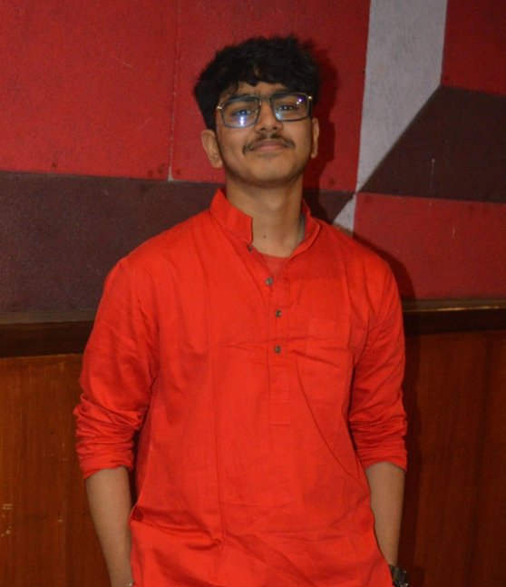

Welcome
Hello there! I'm Abheek Panigrahi, a 16-year-old student from India with a deep curiosity about the universe.
My fascination with space has been with me for as long as I can remember. There’s something incredible about the idea that we exist in an infinite universe—one so vast that even a lifetime of exploration would barely scratch the surface. That thought both humbles and motivates me.
I am one of the youngest Published Physics Researchers having published a research paper on "The Graphical Analysis of Gravitational Time Dilation near a Schwarzschild Blackhole" and getting it published on an International Peer Reviewed Journal, The International Journal for Research, Trends, and Innovation.
I have also worked as an intern at various ISRO affiliated institutions like the India Space Labs(ISL) and the India Space Academy(ISA)
Until recently, most of my time was focused on school academics, where I performed well, scoring 98.2% in my Class 10 board exams. I’m now channeling that discipline into exploring astrophysics more deeply.
Outside of academics, I enjoy playing the guitar, sketching, football, coding—and of course, reading about space.
This blog documents my journey as I learn more about astrophysics and try to understand the universe, one concept at a time. My ultimate goal is to pursue astrophysics and contribute meaningfully to our understanding of the universe.
I hope you like it!